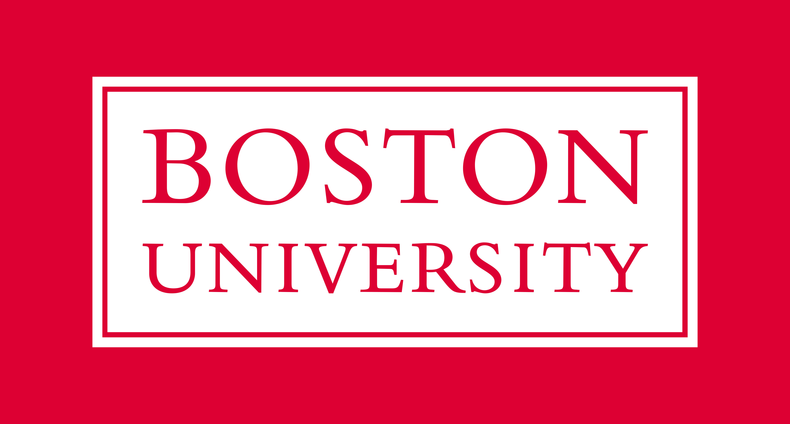

Education!
Boston Universtiy
I am pursuing master of science at Boston University, Metropolitan College in Applied Data Analytics. I started in the Fall 2021 and my expected graduation day is in December 2022. This is a non-thesis 32 credit program (8 courses) which aims to combine analytical tools with an understanding of data mining and machine learning approaches that will enhance one's ability to critically analyze real-world problems and understand the possibilities and limitations of analytics applications.
Fall, 2021
MET CS 544 Foundation of Data Analysis with R
Prof. Suresh Kalathur
MET CS 555 Data Analysis and visualization with R
Prof. Vineet Raghu
MET CS 677 Data Science with Python
Prof. Eugene Pinsky
GITAM University
I finished my undergraduation at GITAM University in 2019, where my major was Computer Science and Engineering. I was a team lead for the final project (at the end of the final year), which is Fire Detection Operandi Using Internet of Things. Our team was a four-member team where I was responsible for the major programming part of the project.